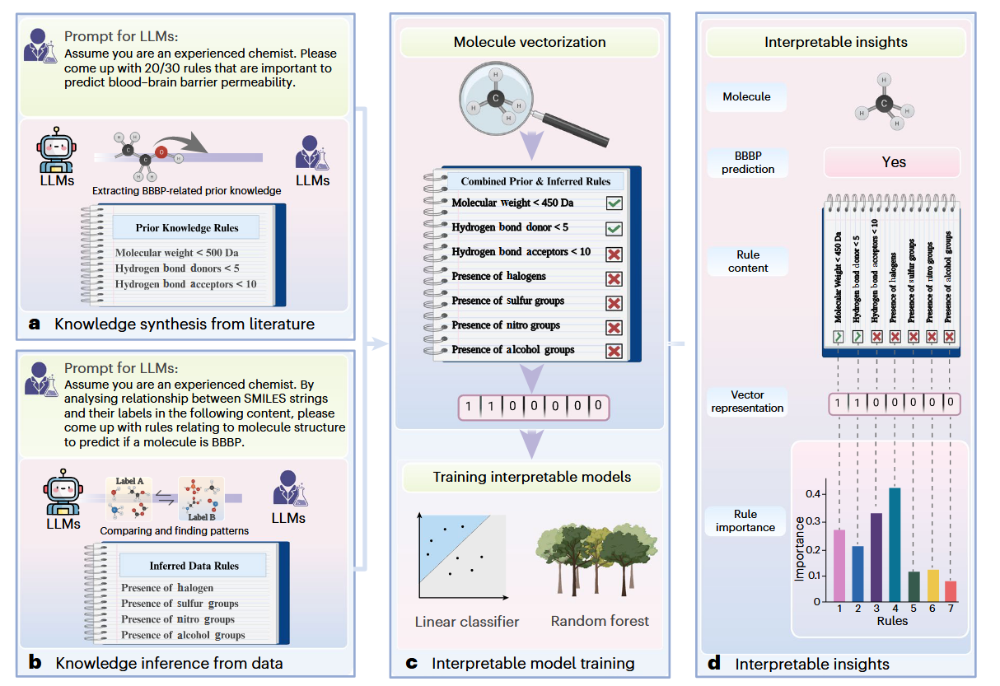
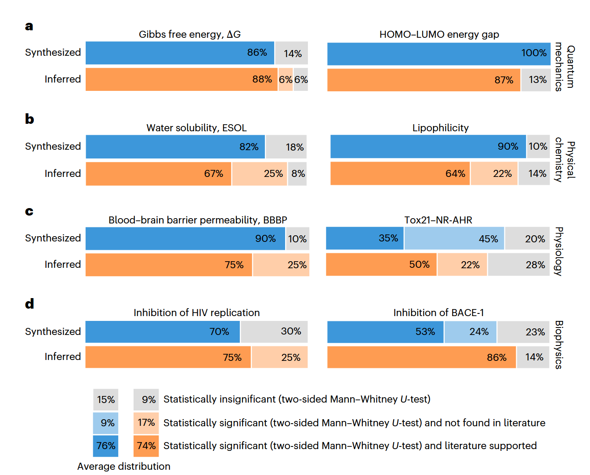
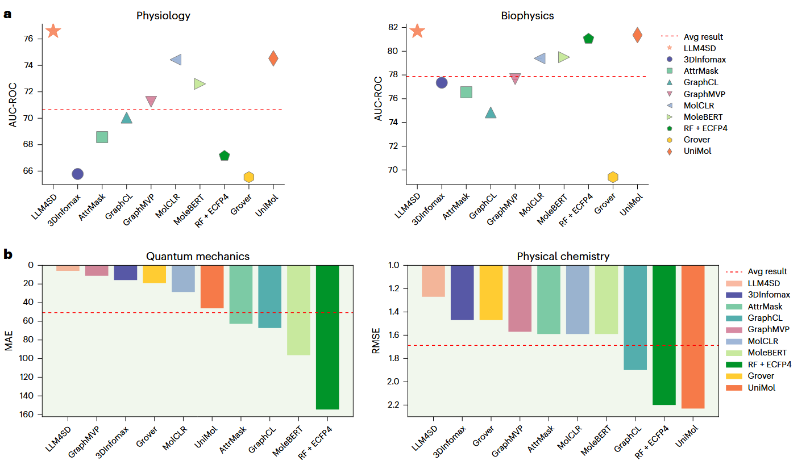

✨ 当AI不仅能预测分子性质，还能像科学家一样“思考”
近年来，科学发现的效率面临严峻挑战，许多领域的进展速度每13年减半。分子性质预测作为药物设计与材料发现的核心任务，亟需突破传统方法的局限。Nature Machine Intelligence最新研究提出了一种创新框架LLM4SD（Large Language Models for Scientific Discovery），通过大语言模型（LLMs）的“知识合成”与“知识推断”能力，实现了分子性质预测的性能跃升与科学洞见挖掘的双重突破 ，为AI驱动的科学发现开辟了新范式。
大型语言模型（LLMs）是一种以自然语言形式封装大量知识的人工智能系统。这些系统擅长许多复杂的任务，包括创意写作、讲故事、翻译、问答、总结和计算机代码生成。尽管LLM已经在自然科学中得到了初步应用，但它们在推动科学发现方面的潜力在很大程度上仍未得到探索。在这项工作中，我们介绍了LLM4SD，这是一个框架，旨在通过综合文献中的知识和从科学数据中推断知识，利用LLM来推动分子性质预测中的科学发现。LLM通过从科学文献中提取既定信息来综合知识，例如分子量是预测溶解度的关键。为了进行推断，LLM识别分子数据中的模式，特别是在简化分子输入线输入系统编码的结构中，例如含卤素分子更有可能穿过血脑屏障。这些信息以可解释的知识形式呈现，使分子能够转化为特征向量。通过将这些特征与随机森林等可解释模型结合使用，LLM4SD可以在预测分子特性的一系列基准任务中超越当前的技术水平。我们预计它将提供可解释的、潜在的新见解，有助于分子性质预测的科学发现。
🔬 背景：科学发现的瓶颈与LLM的潜力
传统分子性质预测依赖图神经网络（GNNs）或传统机器学习模型，但这些方法存在两大痛点：
- 知识整合不足：GNNs需通过预训练学习分子模式，但难以直接利用文献中积累的科学规则（如分子量对血脑屏障通透性的影响）；
- 可解释性缺失：模型多为黑箱，无法生成人类可理解的科学假设。
LLMs的涌现能力为此提供了转机。GPT-4、Galactica 等模型通过海量科学文献预训练，不仅掌握化学概念，还能解析SMILES分子编码语言。例如，LLMs能自动识别“含卤素分子更易穿透血脑屏障”等模式，并将其转化为可解释规则。
科学发现依赖于建立在现有知识的基础上来分析实验数据，识别数据模式并制定合理的假设。这个过程需要两种基本能力：先验知识理解和推理能力。
🛠 LLM4SD框架：让AI成为科学家的“思维伙伴”

LLMs用于分子预测管道中的科学发现。a、 从文献中综合知识。在这个阶段，LLM根据他们预先训练的文献来综合知识，以完成预测BBBP等任务。例如，分子量低于500Da的分子更有可能通过血脑屏障。b、 从数据中推断知识。在这里，LLM分析数据，例如带有标签的SMILES字符串（1表示BBB可渗透，0表示BBB不可渗透），以识别模式。例如，他们可能会观察到含有卤素的分子有更高的机会穿过血脑屏障。c、 模型训练。通过合成和推断规则，分子可以根据其相应的规则值转换为向量表示。然后，矢量化表示可用于训练可解释的模型。d、 可解释的见解。一旦模型经过训练，它就会提供见解，解释它是如何做出预测的。例如，在BBBP预测的背景下，该模型可以揭示每个规则的重要性，显示哪些对最终预测很重要。使用BioRender.com创建的图形。
LLM4SD的核心流程分为四步（👆图）：
- 知识合成：从文献中提取已知规则（如Lipinski五规则）；
- 知识推断：从实验数据中发现新规律（如特定官能团的影响）；
- 特征向量化：将规则转化为可计算的分子特征；
- 可解释建模：用随机森林等模型训练并分析规则重要性。
关键技术突破
- 规则动态生成：利用GPT-4将自然语言规则转化为RDKit代码，例如将“分子量<500 Da”编码为
rdMolDescriptors.CalcExactMolWt(mol) < 500，实现自动化特征工程。 - 混合知识增强：结合文献规则（85%具有统计学显著性）与数据推断规则（91.3%显著），模型在58项任务中全面超越GNN基线。例如，在血脑屏障预测（BBBP）任务中，AUC-ROC提升2.07%。
- 科学新发现：17.3%的推断规则未被文献记载，如“羰基官能团影响分子横截面积”，为后续实验提供新方向。
方法论深度解析：LLM4SD如何实现科学规则的“双引擎驱动”
科学研究的本质是知识的发现与验证，而LLM4SD框架的创新之处在于将这一过程分解为“知识合成”与“知识推断”两大引擎 ，并通过大语言模型的自然语言理解能力，构建了一套可编程、可解释的分子特征生成系统。这一方法论的实现，本质上模拟了人类科学家“文献调研-数据挖掘-假设生成”的思维链条，但以机器的速度与规模将其自动化。
知识合成：从文献中蒸馏科学规则
知识合成的核心目标，是从LLM预训练时吸收的海量科学文献中，提取与特定分子性质预测任务相关的先验规则。例如，在预测药物分子的血脑屏障通透性（BBBP）时，研究者会参考经典的Lipinski五规则 （分子量<500 Da、氢键供体<5个等）。传统方法需要人工编码这些规则，而LLM4SD通过角色扮演式提示工程 实现了自动化：
- 提示设计：向LLM输入结构化指令，例如：> “假设你是一位资深药物化学家，正在研究如何预测分子是否能够穿透血脑屏障。请基于你的专业知识，列出影响这一性质的关键分子特征，并解释其作用机制。”
- 规则提取：LLM输出的自然语言描述（如“分子量较低的小分子更易穿过血脑屏障”）被转化为可计算逻辑。这一过程依赖GPT-4的代码生成能力，将文本规则映射为RDKit化学信息学工具的函数调用。
- 规则验证：通过统计检验（如Mann-Whitney U检验）验证规则与目标性质的相关性。例如，在BBBP数据集中，分子量<500 Da的分子中，75%具有通透性，显著高于大分子（P<0.001）。

LLM规则的文献综述和统计分析。a–d，我们对卡拉狄加-6.7b在所有四个科学领域产生的规则进行了统计分析和全面的文献综述，每个领域评估了两项任务：量子力学（a）、物理化学（b）、生理学（c）和生物物理学（d）。在统计分析中，规则的显著性是根据任务类型确定的：对于分类，双侧曼-惠特尼U-test31比较了所选规则在两类目标变量上的分布差异；对于回归，双侧线性回归t检验44将所选规则视为自变量，并检查其系数是否显著偏离0，反映该规则是否有助于预测。在这两种情况下，我们都使用0.05的P值阈值来确定规则的显著性。在文献综述中，我们评估了现有文献中一条规则的普遍性。通过统计分析和文献综述，将每条规则分为三类：统计显著性和文献支持性；具有统计学意义，文献中未发现；或统计上不显著。在所有任务中，文献综合知识规则在现有文献中普遍存在，并且具有统计学意义。相比之下，经验推断的数据规则产生了喜忧参半的结果，其中一些很容易在现有文献中找到，而另一些则没有被研究人员发现。
知识推断：从数据中挖掘潜在模式
知识推断的目标是发现数据中隐含的、未被文献充分记载的规律。这一过程突破了传统机器学习模型仅依赖数据拟合的局限，而是让LLM像科学家一样观察数据分布并提出假设 。其技术流程包含三个关键步骤：
- 数据分块与模式识别：
- 向LLM输入多组SMILES字符串及其标签（如“1”表示具有目标性质），要求其分析正负样本的差异。例如：> “以下是10个能够穿透血脑屏障的分子SMILES：[CCl, CCBr, ...]，以及10个不能穿透的分子SMILES：[CCO, CCCN, ...]。请分析这两组分子在结构上的显著差异，并总结影响通透性的关键特征。”
- LLM可能输出：“含卤素原子（Cl/Br）的分子在正样本中占比80%，而负样本中仅20%。”
- 规则形式化与去冗余：
- 将LLM提出的模式转化为可计算特征
- 通过规则聚类 （如基于Jaccard相似度）去除重复规则，例如“含Cl”与“含卤素”可能被合并。
- 统计显著性筛选：
- 对每个候选规则进行假设检验。对于分类任务，使用Mann-Whitney U检验比较正负样本的规则值分布；对于回归任务，计算规则与目标值的Pearson相关系数。仅保留P<0.05的规则。
特征工程：从规则到向量的桥梁
经过上述步骤，每个分子被转化为一个特征向量，其维度对应所有合成与推断规则的满足程度。例如，一个分子可能表示为[1, 0, 0.75, ...]，其中“1”表示分子量<500 Da，“0”表示不含卤素，“0.75”表示拓扑极性表面积（TPSA）的归一化值。
这一过程的创新性在于：
- 动态特征空间：特征维度由任务需求动态决定，而非固定的人工设计（如传统的ECFP指纹）。
- 可解释性内嵌：每个特征对应明确的科学规则，使得模型预测结果可直接追溯至化学原理。
可解释建模：打开AI的黑箱
LLM4SD采用随机森林等白盒模型进行训练，其核心优势在于特征重要性分析 。例如，在BBBP任务中，模型可能揭示：
- 分子量规则的重要性权重为0.32，与Lipinski规则的理论预期一致；
- 含卤素规则权重0.28，反映数据中未被文献充分记载的新模式；
- 氢键供体数量规则权重0.15，提示该因素在特定数据集中影响力较弱。
这种可解释性使得研究者能够：
- 验证已知理论（如确认分子量的核心地位）；
- 发现新假设（如探索卤素原子在BBB穿透中的具体机制）；
- 优化实验设计（根据规则重要性优先合成特定结构分子）。
📊 性能对比：传统模型 vs. LLM4SD
| 领域 | 任务数 | 最佳基线模型 | LLM4SD提升幅度 |
|---|---|---|---|
| 生理学 | 41 | MoleBERT | +2.07% (AUC-ROC) |
| 量子力学 | 12 | GraphMVP | +48.2% (MAE) |
| 物理化学 | 3 | 3DInfomax | -12.9% (RMSE) |

LLM4SD和四个领域的基线之间的比较。红色虚线表示所有基线的平均性能。a、 生理学和生物物理学中模型性能与基线的比较分析。b、 回归性能的比较分析：LLM4SD与量子力学和物理化学中的基线。
🌐 从分子到生命科学的跨越
LLM4SD的成功为更复杂任务（如蛋白质序列分析）奠定了基础。然而，基因与蛋白质序列的复杂性（长达数千字符）对LLMs的上下文窗口与领域知识提出更高要求。未来方向包括：
- 领域自适应预训练：在UniProt等生物数据库上增强模型的长序列理解能力；
- 检索增强生成（RAG）：结合专业知识库（如GenBank）提升推理准确性；
- 多模态扩展：整合分子3D结构、实验光谱数据，构建更全面的科学认知体系。
💡 哲思结语：AI与科学的共舞
“科学发现不仅是数据的游戏，更是人类智慧与机器推理的交响。” LLM4SD的突破揭示了一个未来图景：AI不仅是工具，更是科学家的合作者。正如微软研究院Peter Lee所言，AI的终极目标应是“跨越学科与文化的边界，解决人类共同挑战” 。当LLMs的“文献记忆”与“数据直觉”深度融合，我们或将见证一个科学发现民主化的新时代——让每一名研究者都能站在AI的肩头，触及更远的星空。
🔍 延伸阅读
- Augmenting large language models with chemistry tools (Nature, 2024)
- Retrieval-Augmented Generation for Large Language Models: A Survey (CSDN, 2025)
- Large language models (LLMs): survey, technical frameworks, and future challenges (Springer, 2024)